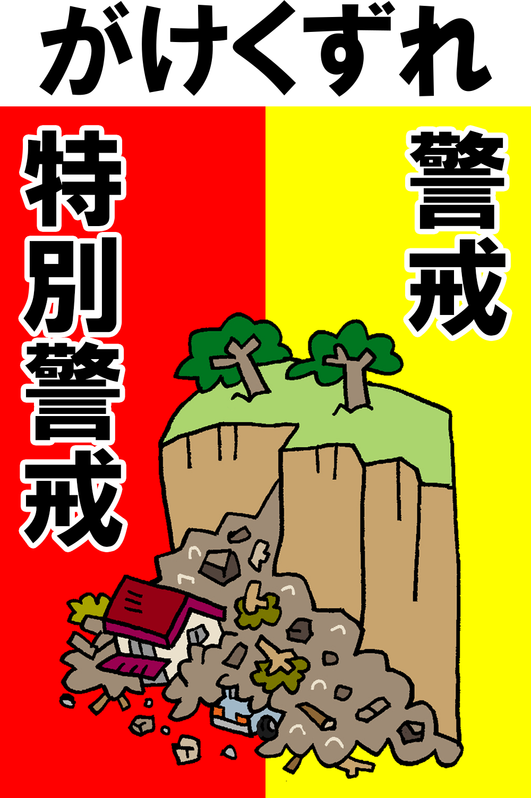
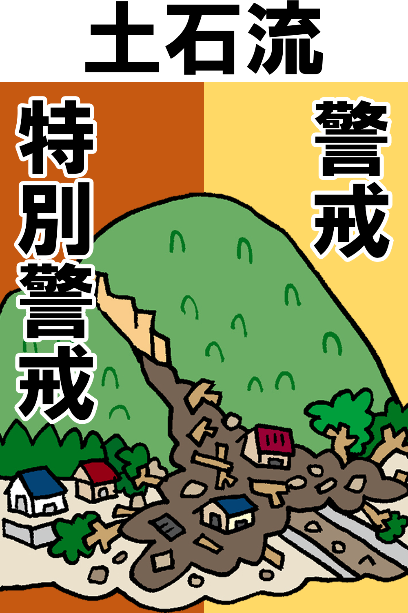
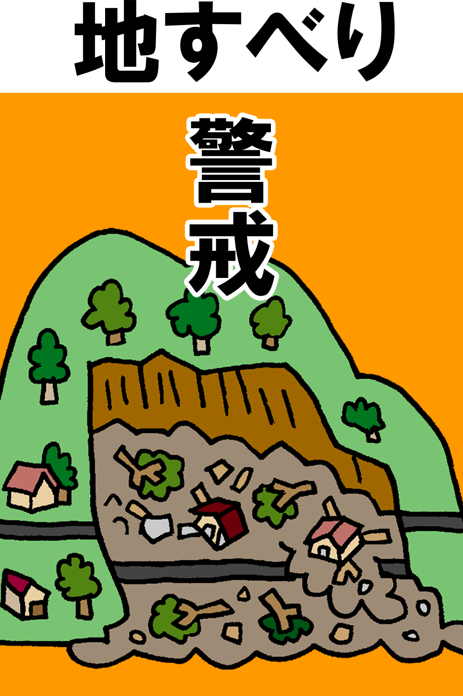
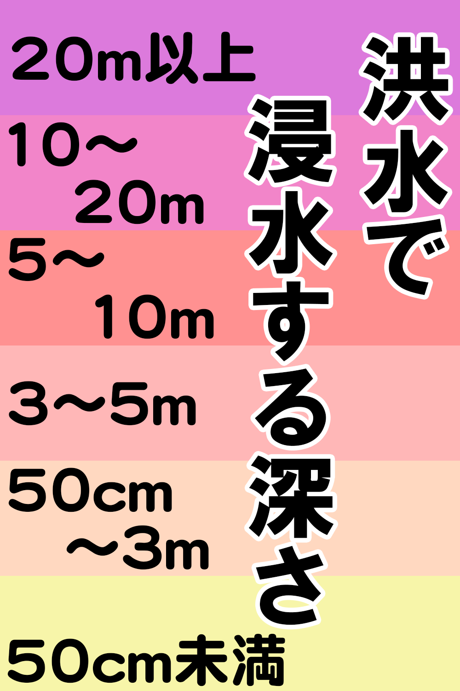

避難所情報
災害危険区域
行政区域データ
国・都道府県の機関データ
鉄道データ
500mメッシュ別将来推計人口データ
Close
わかりやすい地図
北海道
青森県
岩手県
宮城県
秋田県
山形県
福島県
茨城県
栃木県
群馬県
埼玉県
千葉県
東京都
神奈川県
新潟県
富山県
石川県
福井県
山梨県
長野県
岐阜県
静岡県
愛知県
三重県
滋賀県
京都府
大阪府
兵庫県
奈良県
和歌山県
鳥取県
島根県
岡山県
広島県
山口県
徳島県
香川県
愛媛県
高知県
福岡県
佐賀県
長崎県
熊本県
大分県
宮崎県
鹿児島県
沖縄県
表示の選択
情報
「国土数値情報（国土交通省）」を加工して作成
   